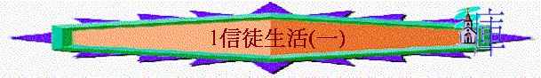

教師版
經文：弗 4：1 、 帖前 1：9-10
＊1999年9月修訂(教員本及學生本)
引言：
我們有 神生命的人活在此罪惡世界中，不免受著罪惡的衝擊，故此我們屬主的人應留意聖經如何指引我們在世上生活。
A.個人生活
聖經告訴我們歸向 神的人，必須要離棄舊有的罪惡生活及活出與蒙召的恩相稱的生活。我們昔日（信主前）的生活方式及思想方式；都是依從世界的模式，而當中有不少的地方是有
違真理的，所以初信主的肢體必須急切的蓋識信徒生活行事為人的原則。
1)當棄絕的事
a)離棄罪惡
「這樣，怎麼說呢？我們可以仍在罪中，叫恩典顯多麼？斷乎不可！」 羅 6：1-2上
未信主前，我們是死在過犯罪惡之中，我們在當中行事為人隨從今世的風俗，心中傾向鬼的心思，並且是放縱自己的情慾；過著罪惡的生活。
例：信主前，我們的口常說長道短，我們的心常是貪婪，又常與人發生衝突及磨擦，過著自私自利的生活。
例：我們常說謊話，用美好的藉口來掩飾自己的罪惡，以此為聰明及有口才，甚或以為是別人愚拙。
例：又有人在信主前過著放蕩的生活，在罪惡中生活，犯著色情的罪、暴力的罪、吸毒的罪......。
我們所作的常與 神對敵，敵擋真理，終日所思盡都是惡，但是 神憐愛我們，將救恩賜給我們，代價是要主耶穌代我們死在十字架上，為我們的罪死，那我們豈可以仍繼續犯罪呢？並且罪會珮壞我們與 神的關係。
「我若心�堛`重罪孽，主必不聽。」 詩 66：18
例：若我們的眼鏡有了塵埃，我們必定會看不清事物，同樣，罪成了我們與 神之間的阻隔。
若信主後仍常犯罪，會使我們失去對 神的觸覺，以致我們會對 神產生冷漠。
例：如作粗重工作使人的手粗糙，手指的神經失去敏銳的反應。又如在廚房工作的人，手拿熱的東西，是沒有反應的，因皮膚早已損壞了。
b)離棄偶像
「我所親愛的弟兄阿！你們要逃避拜偶像的事。」 林前 10：14
「基督和彼列有甚麼相和呢？...... 神的殿和偶像有甚麼相同呢？因為我們是永生神的殿。」 林後 6：15-16上
我們既然蓋識真神，就不應以其他人手所作偶像的為神，並且我們應知道 神是忌邪的神，人敬拜偶像即是將不能朽壞的 神；看成與那些會朽壞的人或飛禽走獸的樣式，又將真神與假神同列，並且魔鬼以這些偶像奪去人對 神的敬拜，故此拜偶像是得罪 神的行為，是 神所禁止的。
例：不信的人常以某偶像很靈驗及相信可以幫助他們得利或達成其目的而求問它或依靠它，但他們是出賣自己的靈魂來換取今生短暫而虛幻的財寶，並且讓撒但在他們身上更有權勢來控制他們及攔阻他們歸向 神。基督徒既然屬主，就不應與撒但有相交及相通，此是得罪 神的行為。舊約的掃羅王因求問交鬼的婦人而招 神的震怒。我們既已歸向主，就應將與偶像有關的東西完全棄絕及拆毀，如昔日以弗所信徒在歸向主後，就將邪術書燒毀，又不再與偶像有什麼的相通。（參 弗 19：1-20）
『有人對你們說：「當求問那些交鬼的，和行巫術的，就是聲音 （綿）蠻，言語微細的。」你們便回答說：「百姓不當求問自己的 神麼？豈可為活人求問死人呢？」
人當以訓誨和法度為標準，他們所說的，若不與此相符，必不得見晨光。』
賽 8：19-20
故此我們不可再向偶像或死人下拜、上香、祭祀、求問或作占卜的事，一切與偶像有關連的事均不可作。
若在你家中有偶像，應奉主的名將一切偶像丟棄，但這些偶像若是屬未信主的家人，就不應強硬的行事，因這些東西不是屬於你的。我們心中對偶像的心思也得更改，不要被迷信的心思左右我們的生活及對主的心。
例：如我們覺得某偶像很靈驗，未信主前曾求問過它，信主後仍以昔日從偶像所得的指引來看自己人生的遭遇，或對此偶像存畏懼或敬佩的心，此是不應當的，因這是對 神不敬及違背 神的教導，並顯示我們還服在偶像之下，蓋為 神的能力不及偶像，也表明我們不明白得救是從撒但的權下歸向 神。（參 徒 26：18）
例：以為農曆初一十五不可以洗頭或害怕黑色星期五等，這都是迷信的思想，信主後不應仍存有上述思想及受它轄制，也不可存有違背真理的思想（如異教的思想和教導）。
「小子們哪！你們要自守，遠避偶像。」 約壹 5：21
除了人所敬拜的偶像之外，其實在我們心靈中佔有與 神「同等或更高地位」的人、事或物，也是我們的偶像，故此我們各人都或許有偶像，需要 神自己的工作，指示我們離棄偶像的纏累，並一生讓 神居首位。
例：有人的偶像是人，如兒女，為著使他們多得享樂，而忘卻 神；或妻子或丈夫，為討好她或他（配偶）而輕忽 神的心意。或其他心中愛墦的人，看他們比 神還重要，如歌星、明星等。
例：有人的偶像是事或物，如嗜好，可以佔有我們整個心靈而輕忽 神，比方為玩樂（如玩遊戲機）而不聚會及遠離 神，或為喜好（如電腦上網）而不看重真理及本身的靈性。
c) 棄絕謊言
「所以你們你們要棄絕謊言，各人與鄰舍說實話，......」 弗 4：25
人的口常會說謊話，但要知說謊的人是屬魔鬼的（參 約 8：44）。
我們是屬 神的兒女，豈可以錯站地位而得罪 神呢？並且謊言使人與人之間的關係更疏離、更隔膜及互相猜疑，而且一個屬 神的人若說謊，會使未信的人懷疑他所傳的福音，成為他人得救的攔阻。
2)當選取的事
a)操練敬虔
「操練身體，益處還少，惟獨敬虔，凡事都有益處，因為有今生和來生的應許。」
提前 4：8
敬虔即似 神，我們信主後應問自己是否漸漸的似 神，在生活中有否彰顯 神的榮美
及讓人從我們身上看到 神的性情呢？要記著不是一次過的改變，是漸進的，否則會很
易落入自責中。敬虔也表淚在我們對屬靈的事有多少的專注及真誠，對 神的愛墦、敬
畏和信靠等。
ｂ)討主喜悅
「總要察驗何為主所喜悅的事。」 弗 5：10
我們不應只消極的不作 神不喜悅的事，應積極的去作 神喜悅的事，因愛 神而常
作 神所喜悅的事。若只有消極的棄絕而沒有積極的取向，人生則不免失去喜樂。
例：在戀愛當中的人或夫婦生活中，不單不作對方不喜悅的事，乃更去作對方所喜悅的事。我們要留心察看聖經中 神所喜悅的事，如：傳福音、為萬人代禱、為肢體代禱、行仁義公平、與人說和睦話......等。
ｃ)時刻儆醒
「萬物的結局近了，所以你們要謹慎自守，儆醒禱告。」 彼前 4：7
因末後的世界會越來越壞，人若不小心，便很易落入罪惡中而不自覺。
例：曾有人作一實驗，將一隻青蛙放入一杯熱水中，那青蛙會立時跳出水中，因牠受不了那水的熱度，但若將那青蛙放入水中後才漸漸加熱，那青蛙會在水中在不察覺中被煮熟。
基督徒在此世界中若失去儆醒，便很易的被同化，在罪中失去對 神應有的反應。世間上有很多的新學說和觀念，使人很易對罪失去了正確的辨別，以致是非不分。例：同性戀昔日是為人所定罪的，但在淚今世代，不少人（包括一些自稱是基督徒，甚或是一些於教會作教導的）用很多的解釋（包括引用聖經！）將這罪行解釋成合理的。
例：賭博的人常說是為了娛樂，但若仔細的究察其內心，則不難發淚他們是被賭博的罪所轄制。
B.社交生活
基督徒生存在世上，是不能不與人（包括基督徒與非基督徒）往還的，但我們必須有正確的立場及堅穩地持守著 神的教導。
1)分別為聖
「你們在一切所行的事上也要聖潔。」 彼前 1：15下
因我們是屬 神的， 神既是聖潔的，我們必須同樣要聖潔。世上的人行事不是以真理為準則，我們卻必須要以 神的教導（真理）為唯一的標準 ,並留心與真理不合的事。
例：同學們在考試中作弊，我們屬 神的人不應同流合污，寧可少些分數，也不可以詭詐手段得分。
例：同事們以吃飯餘下的錢，合資買六合彩，我們不可以蓋同及參與，因賭博是貪心的行徑，與 神的教導違背，應取回自己餘剩的一份，故寧可得罪人也不可以苟同。
例：如在買賣中或別人的找贖中，少付或多取也是不應當的，勿存貪念而隱瞞事實。
2)作鹽作光
「你們是世上的鹽......你們是世上的光.......」 太 5：13-14
這是指我們必須有好的行為，藉我們的生活來見證 神。要知道外邦人是從我們身上去蓋識 神，我們的行為若比未信主的世人還要低下或一樣，便不足以使他們對我們的信仰產生愛墦。要知 神是看內心，人是看外表，故勿以「有性格」、「真情流露」或「想做就去做」作為放任的籍口。
C.生活原則
面對這瞬息萬變的世代，不是用「這可以」或「那不可以」作來定規的，須留心聖經的
原則和教導。
1)「凡事我都可行，但不都有益處。」 林前 6：12上
2)「凡事我都可行，但無論那一件，我總不受它的轄制。」 林前 6：12下
3)「凡事都可行，但不都造就人。」 林前 10：23下
例：有人會以看電影為罪，但若我們用來作佈道又如何呢？故此我們應要問我們所看的電影會否對我們的靈性有虧損，不是我們說有或無，應從實質生活上看我們的思想、行事為人、說話的方式及人生觀會否跟著電影的思想和潮流走（這是有否受它轄制的問題）。又我們看的電影是否有違真理，如鬼片是傳揚鬼怪的能力，會否使我們對 神的信心減少，甚或失去呢？並且要尋求 神對此等事的看法（ 神要我們不要沾染此類事情，這涉及益處的問題）。
學生版
經文 ： 弗 4：1
A)個人生活
1)當棄絕的事
a)離棄罪惡
「這樣，怎麼說呢？我們可以仍在罪中，叫恩典顯多麼？斷乎不可！」
羅 6：1-2上
「我若心�堛`重罪孽，主必不聽。」 詩 66：18
b)離棄偶像
「我所親愛的弟兄阿！你們要逃避拜偶像的事。」 林前 10：14
「基督和彼列有甚麼相和呢？...... 神的殿和偶像有甚麼相同呢？因為我們是永生 神的殿。」 林後 6：15-16上
「小子們哪！你們要自守，遠避偶像。」 約壹 5：21
c)棄絕謊言
「所以你們你們要棄絕謊言，各人與鄰舍說實話，......」 弗 4：25
「你們是出於你們的父魔鬼，你們父的私慾，你們偏要行，牠從起初是殺人的，不守真
理，因牠心�堥S有真理，牠說謊是出於自己，因牠本來是說謊的，也是說謊之人的
父。」 約 8：44
2)當選取的事
a)操練敬虔
「操練身體，益處還少，惟獨敬虔，凡事都有益處，因為有今生和來生的應許C」
提前 4：8
b)討主喜悅
「總要察驗何為主所喜悅的事。」 弗 5：10
c)時刻儆醒
「萬物的結局近了，所以你們要謹慎自守，儆醒禱告。」 彼前 4：7
B)社交生活
1)分別為聖
「......你們在一切所行的事上，也要聖潔。」 彼前 1：15
2)作鹽作光
「你們是世上的鹽，......，你們是世上的光，.......」 太 5：13-14
C)生活原則
1)「凡事我都可行，但不都有益處。」 林前 6：12上
2)「凡事我都可行，但無論那一件，我總不受它的轄制。」 林前 6：12下
3)「凡事都可行，但不都造就人。」 林前 10：23下